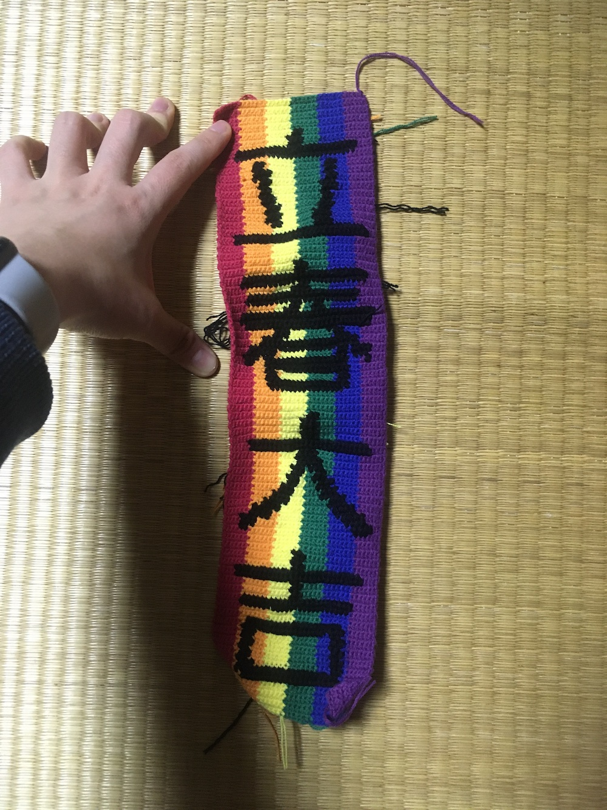
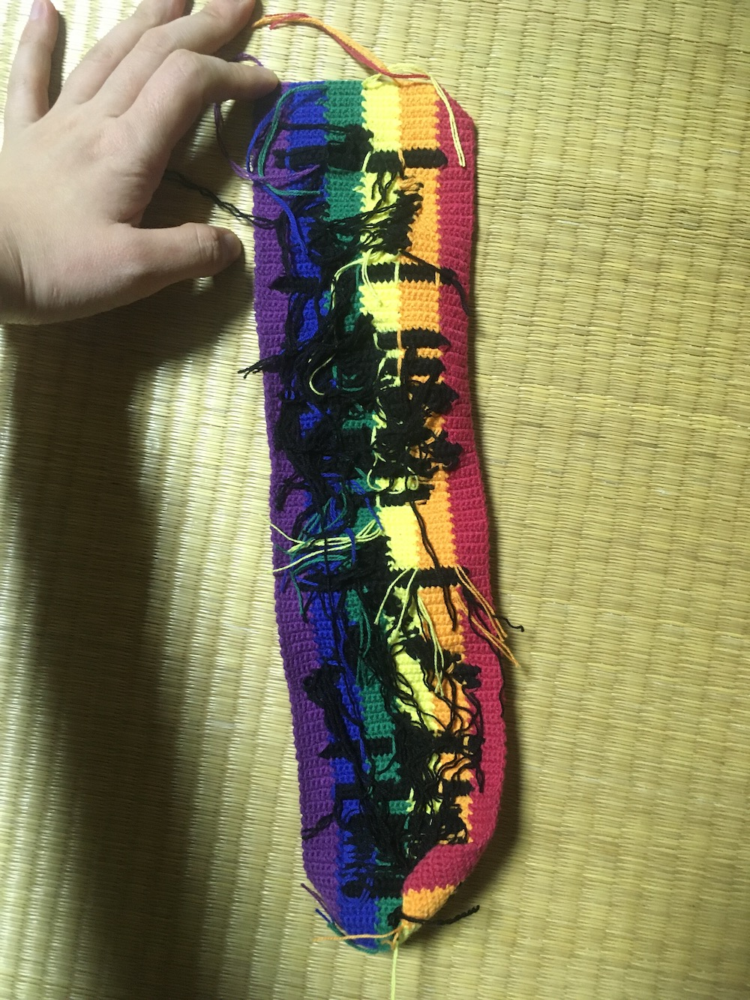
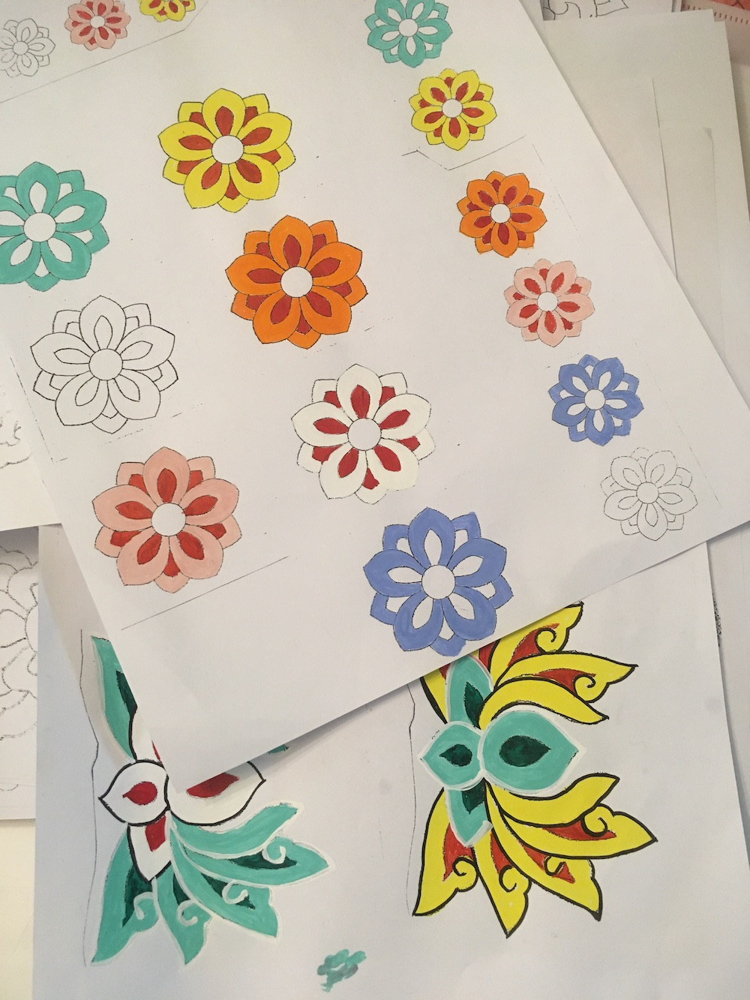
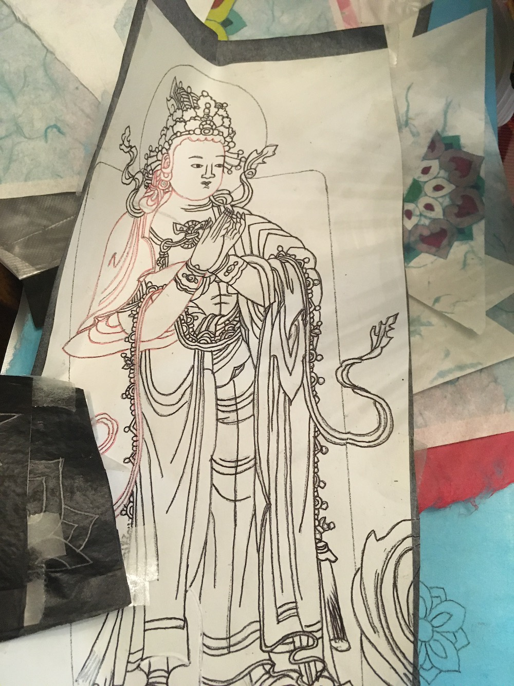
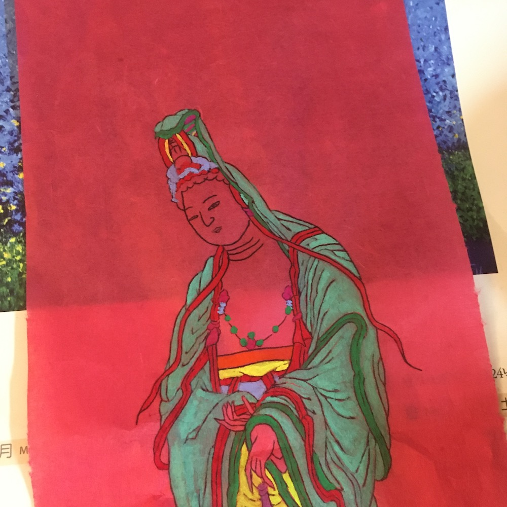
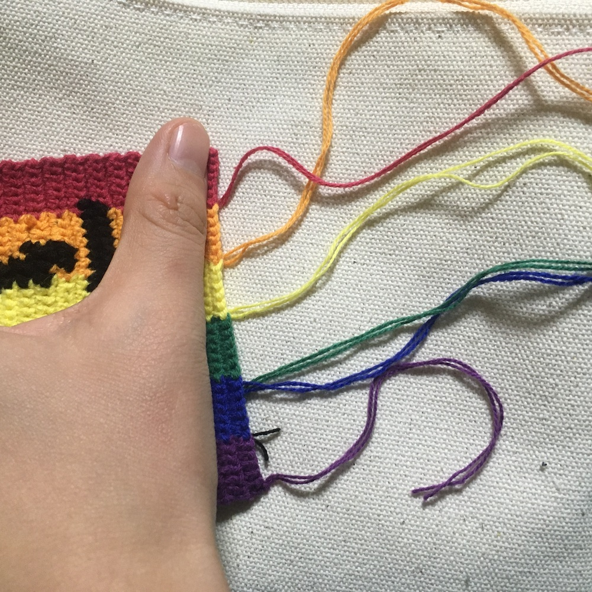
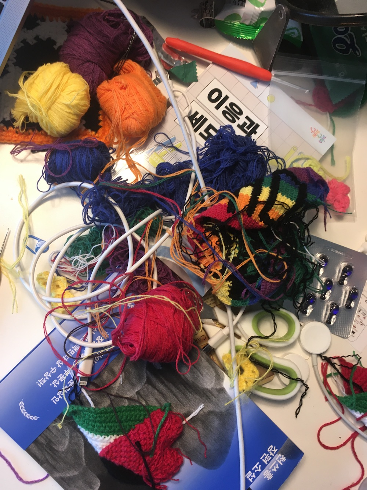
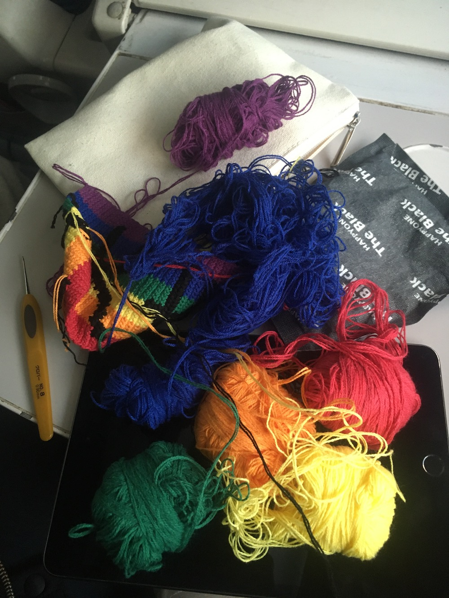
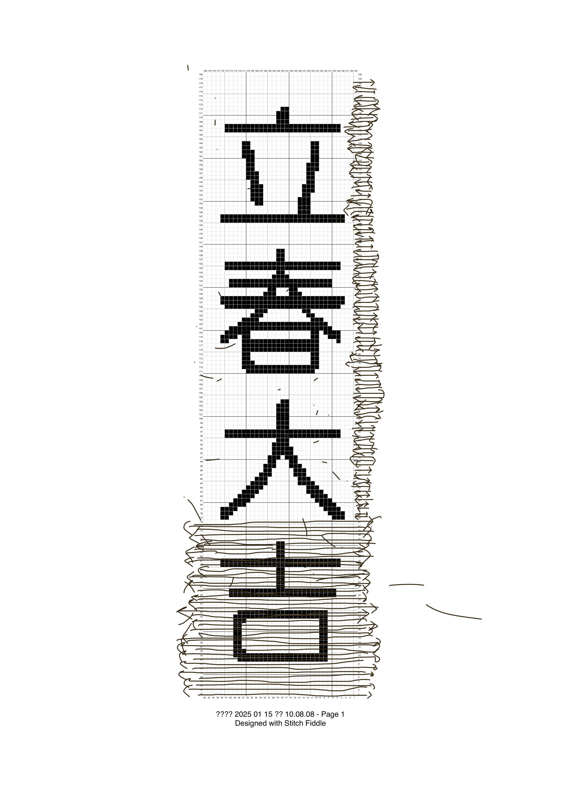

언제나 절에 기도 올리라고….
 설 명절을 맞아 고향에 내려 와있다. 서울에서 볼일 다 보고 연휴 마지막 쯤에 고향에 내려와 있는 기분이 나쁘지 않다. 당연히 뜨개질 거리도 가져왔다. 연휴 동안에 입춘대길&건양다경을 완성할 수 있지 않을까 생각했는데, 이런 저런 다른 뜨개질 스케줄로 온전히 이것에 시간을 쓰지는 못했다. 그럼에도 기어코 입춘대길은 완성하고야 말았는데….
하여간 제목과 그 다음 문구는 어쩌다 생각이 났냐 하면은..
집에 내려 와서 코바늘로 무지개 입춘대길을 뜨고 있는 와중에 엄마와 이모는 연례행사 아니 체감으로는 거의 연중 상시 행사 같은 연등 그림 그리기를 하고 있었다. 해마다 오월초파일 a.k.a. 부처님오신날을 맞이하여 절에 연등을 열 몇개는 그려 보낸다. 5월이 목표 지점인데 내 체감상 그 전해 10월 정도부터는 그림 그릴 계획을 시작하고 부처님오신날을 보내고 나면 또 내년에는 무슨 그림을 그릴지 논의를 시작하기도 한다. 얼추 연중 상시 행사가 맞는 셈이다.
집에 가끔 내려 가면 밑그림과 한지와 연등 틀이 보통 항상 있었다. 가끔 나도 이 일에 동원됐다. 엄마와 이모는 주중에 개인적인 시간이래봐야 저녁 아주 늦은 시간 밖에 없는 일상인 걸 알아서 고생스런 이 일을 왜 매년 하는 걸까 그런 생각도 자주 했다. 그러다 보니 불심에 기인한 행위라기보다는 취미 생활에 가깝다고 생각했다.
  사실 이전부터 엄마와 이모의 불심을 삐뚫게 바라보긴 했다. 내가 원래 종교에 좀 무관심한 편이기도 하지만… 어렸을 때부터 엄마의 보살 생활을 봐왔어서 그런지, 절 안에서도 굉장한 정치가 벌어지는 걸 대충 봐왔어서 그런지…. 그냥 마음을 기대거나 시간을 보내거나 하기 위해, 필요에 의해 믿는(다고 생각하는) 것이 아닐까 싶은.. 삐뚠 마음..
종교란 게 다 뭔지 불심이란 것이 다 뭔지. 때 마다 기도를 돈 주고 하는 거나 새벽 기도를 가는 거나 뭐라도 빌어야 하는 마음이 뭔지 사실은 잘 모르겠다는 생각을 자주 했던 것 같다. 급기야.. 내가 빠순이인 것도 어쩌면 엄마의 유전자로부터 물려받은 게 아닐까 싶었다. 말하자면 내가 보기에 엄마는 부처님빠순이에 가까웠기 때문에.. 불효막심하도다..
솔직히 유난이라고 생각했던 것 같다. 연등을 그려서 절에 보내는 게 뭐라고. 연등을 직접 그리면서까지 왜 이리 종교에 귀의하려 하노.. 그런 생각을 했었나.. 근데 이제 집에서 쉬는 동안에 내가 코바늘을 주섬주섬 꺼내는 걸 보고 엄마가 이건 또 뭐고 하는 눈으로 보는 걸 회피하면서, 내 옆에서 엄마랑 이모가 그림에 색칠을 시작하는 그 상황이 되어 보니까 이것 참 묘하구나 싶었다. 유난 떠는 건 집안 내력인가.. 이걸 이제서야 깨닫고..
부처님 그림 그리는 게 뭐라고, 불교 문양 그림 그려서 연등 만드는 게 뭐라고 저렇게까지 하나 싶었던 게 이제 와보니 내가 코바늘하는 것과 다르지 않구나 싶다.
어제 밤에는 selfish knitter(*오로지 나만을 위한 뜨개질을 하는 사람) 라는 용어도 발견했다. 트윗한 사람의 말에 따르면, 여자들의 공예 취미를 폄하하는 용어인데 이기적인 뜨개러가 뭐가 나빠?!라는 의견을 전해서 그런 의미구나 하면서도, 나는 이기적이고 이타적이고 이런 걸 떠나서 뜨개질을 하게 하는 동기 부여는 대체로 밖에서 오는 편이라서.. 내 재미는 사실 뜨개질을 하는 것 자체에서 충족이 된다. 그런 의미에서 selfish knitter도 맞긴 함.. 근데 뜨개질을 하려면 뭔가를 만들고 싶다거나 만들어야 겠다거나 그런 마음이 있어야 하는데 이것 자체는 다 밖으로부터 온다.
연등 그리는 것도 얼추 비슷하지 않으려나 생각한다. 그림 그리는 게 취미로도 재밌으니 계속 하는 거고 그것도 큰 동기일 거라고 생각한다. 그럼에도 연등을 고생스럽게 만드는 마음은 어쨌거나 불심으로.. 바라옵건대 모두의 건강과 행복을 기원하며 잘 살 수 있게 부처님 도와주세요 하는 그런 마음이겠거니 생각한다.
엄마는 정초 기도를 갔고.. 어제는 이제 나 보고 절에 기도 좀 올리라더라.. 바라옵건대 바라고 싶은 것이 없기는 한데.. 1년에 한 구다리 정도는 효도하는 마음으로 기도 내돈내산 좀 해야겠다는 생각을 했다.
+
심란한 마음을 이겨내는 과정 사진들..
  